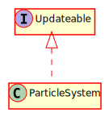

Hierarchy-Diagram
{kind=link}
Legend
 class
class
 interface
interface
Hierarchy
- ParticleSystem
Implements
Index
Constructors
constructor
Parameters
poolSize: number
The pool size, i.e the total number of particles that will be created
sourcePoint: Vec2
The initial source point each particle will start at when the system is running, can be changed
lifetime: number
Lifetime of each particle before they are set inactive
size: number
Size of each particle
mass: number
Initial mass of each particle, can be changed
maxParticlesPerFrame: number
Total number of particles that can be created during a given frame.
Returns ParticleSystem
Properties
Protected color
Protected lifetime
Lifetime for each particle
Protected particle
Protected particle
Pool for all particles
Protected particle
Protected particles
Particles that can be rendered per frame
Protected particles
Total number of particles to render, this will be incremented overtime by particlesPerFrame
Protected source
Protected system
Timer for how long a particle system lasts before being turned off
Protected system
Methods
change
Parameters
color: Color
Returns void
initialize
Initialize the pool of all particles, creating the assets in advance
Parameters
scene: Scene
layer: string
Returns void
set
Default implementation of setParticleAnimation, no tween animations occur, but each particle is given a random velocity. It's encouraged for you to override this function and implement your own tween animations.
Parameters
particle: Particle
Returns void
start
Start up the particle system to run for a set amount of time
Parameters
time: number
Time for the particle systme to run
Optional mass: number
Optional change of mass for each particle
Optional startPoint: Vec2
Optional change of start position for each particle
Returns void
stop
Returns void
update
Updates this object.
Parameters
deltaT: number
Returns void
Construct a particle system